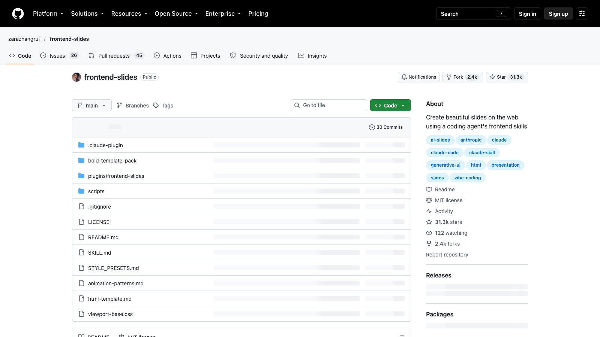

MIMI / AI PRACTICE SERIES
Codex×WorkBuddy×Grokbot
AI
实战训练营
把 AI 变成自己的工作系统
从工作台配置开始，走完「资料 → 工作流 → 交付 → 复盘」的完整路径。
问题通常不在模型，而在任务没有被拆开、资料没有准备好、结果没有被核验，最后也没有沉淀成下一次可复用的流程。
文件、聊天、网页、表格都在不同地方。
每天都在做同样的整理、汇总和改写。
有答案，却没有清晰的文件、流程和下一步。
一次对话结束，下一次还得重新开始。
一个好结果不是一句神奇提示词带来的，而是一条可以重复运行的小型生产线。
工具只是入口。真正决定效率的是 Skill、资料和流程能不能连成一条线。
处理文件、网页、代码与复杂任务，把结果落成可交付文件。
接入日常办公和团队协作，让工作流进入真实环境。
补充研究、表达和创意探索，快速生成多种可能。
从最容易看到收益的事情开始：整理文件、生成日报、提取聊天记录、建立知识库，再把资料用于研究和决策。
资料结构清楚，后面的内容、研究和自动化才会更快。
先确定观点和受众，再选择表达形式。AI 帮你生成多个版本，人负责判断清楚、统一和有行动。
让观点能被讲清楚、被记住、被继续讨论。
用一张画面抓住注意，建立品牌的第一印象。
把复杂内容压缩成可以听懂的 60 秒。
从脚本到分镜到发布素材，一次做成一组。
不从“做一个很酷的网站”开始，而是从一个真实的业务入口开始：客户从哪里来，提交什么信息，谁来跟进，下一步如何自动化。
任何任务都先问五个问题：目标是什么？输入在哪里？标准是什么？谁来接手？怎么证明做对了？
把散乱的文件，变成一个别人一分钟就能找到答案的入口。
页面不是文字的容器。每一页只承担一个动作：解释、比较、证明或推动决定。
一条观点，拆成四种媒介；一次准备，服务多次传播。
抓住注意，建立品牌第一印象。
把复杂内容压缩成 60 秒。
脚本、分镜、字幕与发布素材。
让观众知道下一步要做什么。
可以是网站首页、预约表单、线索收集工具，或者一条自动化工作流。
品牌与转化入口。
把服务带到用户手边。
让团队工作流稳定运行。
在真实场景中完成一次目标。
结构清楚，下一次修改不会推倒重来。
输入、步骤和模板可以迁移到下一个任务。
关键判断有来源、有时间、有记录。
下一位使用者知道从哪里开始。
每次复盘都让下一次更快。
不是让模型直接“画一张图”，而是先确定信息层级，再用视觉模型补足材质与氛围，最后由我们掌控排版和行动入口。

同一套产品逻辑，适配不同入口；从一个能演示的原型开始，再逐步接入真实业务。
官网、落地页、控制台。
预约、查询、轻量服务入口。
把高频动作带进移动场景。
让团队日常工作稳定运行。
我们不只讲“可以做”，现场会打开仓库、读说明、启动页面，再把内容换成自己的课程。

整理文件、日报、聊天记录、知识库。
PPT、海报、口播、短视频。
网站、表单、线索、自动化。
工具会更新，流程会迭代，但真正属于你的工作方式，会越来越清楚。